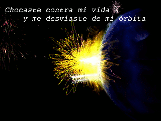
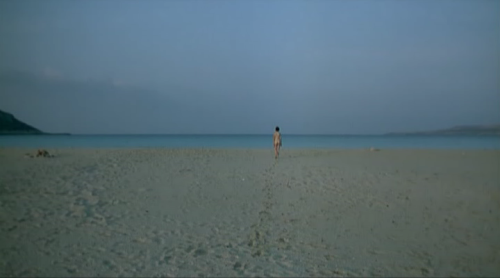
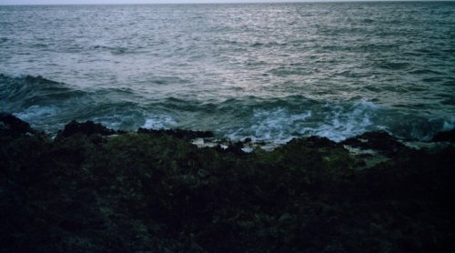

Nadie menciona cómo el clima afecta nuestras vidas. La conocí un día de lluvia: sin aquel aguacero no nos hubiéramos visto nunca. Llegó con las aguas del cielo y se fue con los ojos anegados en lágrimas, dejando tras sí el mismo olor a campo, a tierra mojada. Fue entonces que entendí, cuando ese olor primitivo que recuerda la infancia quedó flotando en el aire como un sortilegio. Muy tarde conecté las múltiples pistas del acertijo que rodeaba nuestras vidas. No desentrañé a tiempo su naturaleza acuática, su esencia de ninfa. Mientras que yo, en cambio, soy de manera definitiva un ser pedestre, sujeto a la tierra cual a mi origen.
¿Cómo podría funcionar lo nuestro?

Y hubo tantos indicios: vivía en una ciudad con siete puentes, y otros tantos ríos; de niña su padre trabajaba en el puerto, y ella se acostumbró a que el mar la meciera y arrullara; le gustaba sobremanera bañarse en los aguaceros; cuando lloraba era como si la lluvia toda se hubiera metido en sus ojos; su sonrisa tenía algo de las brisas húmedas del invierno; y en el clímax del amor hacía una fuente de su cuerpo.
En una tierra donde nos estamos quedando sin ríos y mares, donde se está secando hasta el Cauto, mi mujer resulta una ninfa de agua. Esta mujer anfibia de la que he quedado enamorado, que no pertenece a mi vida terrestre: mi mundo desolado, de dunas y sol ardiente.
Antes de conocerla yo era definitivo como el desierto que nunca da un paso atrás, mi corazón estaba gris y crujiendo como la hierba en abril, su piel agrietada como la tierra seca. Ella, en cambio, estaba acostumbrada a amar, a desbordarse sobre los demás, a revivir incluso a los más áridos. Como la lluvia cae para traer vida, para reanimar lo seco e infértil, llegó ella a mi vida. De súbito vi como crecía un suave musgo, y luego helechos, y luego árboles gigantes que enraizaban en mis venas y me ahogaban con el verde de sus copas cada vez que la miraba.
Ahora no queda más que la hierba bien cortada: soy mi propio jardinero. Pero debería saberse que bajo el pasto, la tierra respira y tiembla.
Era imposible de todas formas. Ella tuvo su vida y yo la mía. Quisiera hacérselos gráfico: Esto es lo que se imagina cuando se menciona la palabra mar,

Esto es lo que veo yo todos los días, el mar no es ese sueño de dulce aventura, sino la tristeza infinita, un llanto hecho lago,

y no sorprende la sonrisa sarcástica del dienteperro, con la saliva rancia que descansa semanas de musgo: la costa de los amores furtivos y tiradores, la costa de los delincuentes, la costa de luna llena y de muerte lenta... ese es mi mar. El mar crápula, que escupe cuando lo llamas "la mar". No aquel otro de arena bruñida de donde viene ella.
Era imposible. ¿Quién abandonaría aquel mar de infinito placer por este desierto de sal y agua?
 Volver al Inicio
Volver al Inicio